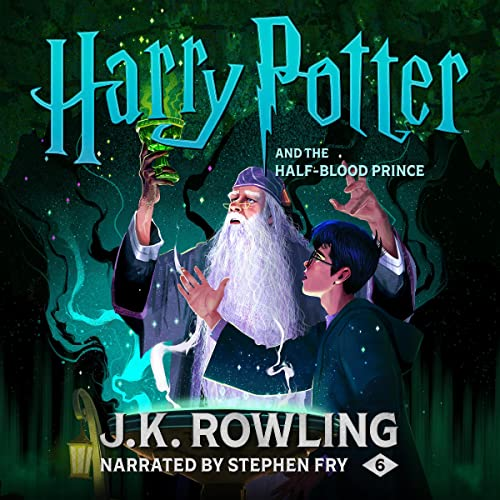
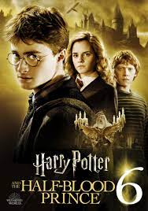

This is the Harry Potter audiobook I am listening to right now:
The Harry Potter series is one of the most famous in the world, and for good reason.
Harry Potter is a series of seven fantasy novels written by British author J. K. Rowling. The novels chronicle the lives of a young wizard, Harry Potter, and his friends Hermione Granger and Ron Weasley, all of whom are students at Hogwarts School of Witchcraft and Wizardry. The main story arc concerns Harry's conflict with Lord Voldemort, a dark wizard who intends to become immortal, overthrow the wizard governing body known as the Ministry of Magic, and subjugate all wizards and Muggles (non-magical people).
This book series has so much to offer. Growing up watching the movies lay some of my favorite memories, especially watching them for the first time. It truly felt magical.
Here is the Wizarding World website: You will become a wizard if you click!
The success of the books and films has allowed the Harry Potter franchise to expand with numerous derivative works, a travelling exhibition that premiered in Chicago in 2009, a studio tour in London that opened in 2012, a digital platform on which J. K. Rowling updates the series with new information and insight, and a trilogy of spin-off films premiering in November 2016 with Fantastic Beasts and Where to Find Them, among many other developments. Themed attractions, collectively known as The Wizarding World of Harry Potter, have been built at several Universal Destinations & Experiences amusement parks around the world.
When I was little, I went to the Wizarding World at Orlando, Florida, and it was my favorite trip of all time. The Wizarding World at Orlando
This is Luna Lovegoods Wand, in my opinion it's the coolest looking!
The last four books consecutively set records as the fastest-selling books in history, with the final instalment selling roughly 2.7 million copies in the United Kingdom and 8.3 million copies in the United States within twenty-four hours of its release. The original seven books were adapted into an eight-part namesake film series by Warner Bros. Pictures. In 2016, the total value of the Harry Potter franchise was estimated at $25 billion,[7] making Harry Potter one of the highest-grossing media franchises of all time. Harry Potter and the Cursed Child is a play based on a story co-written by Rowling.
This is my favorite Harry Potter movie:
I've just always loved Half Blood Prince the most, the Wii game must have had such a strong and positive influence on me as a kid.
This game rewired my brain chemistry, and it was truly the best gift I ever recieved as a kid